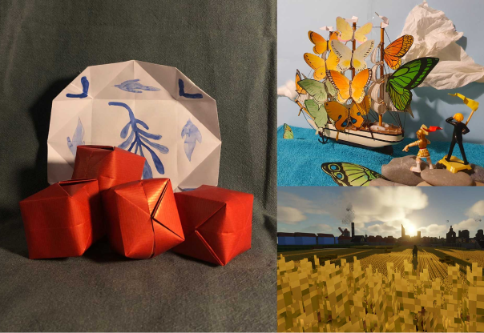
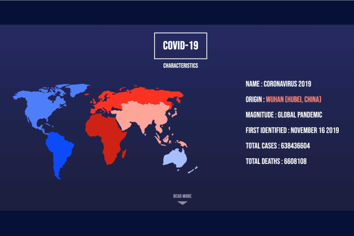
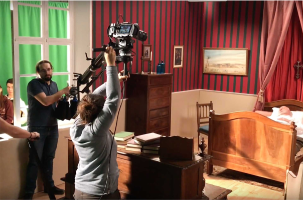
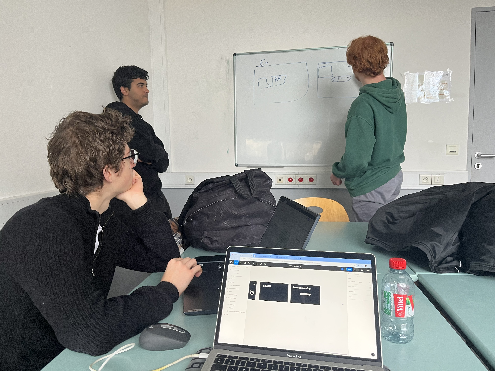
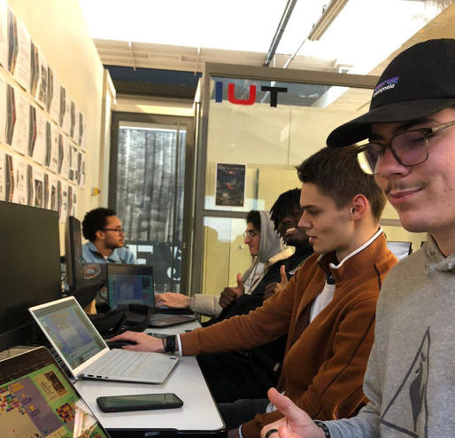
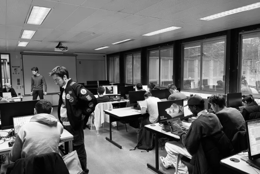

Une expérience immersive ...
Ce webdocumentaire est une expérience immersive vous plongeant dans la formation BUT MMI - Métiers du Multimédia et de l’Internet. À travers une SAE - Situation d’Apprentissage et d’Évaluation - vous participerez à la conception d’une campagne de communication avec une équipe de quatre étudiants. Ils vous feront découvrir les coulisses de leur formation tout en vous impliquant dans la SAE. Vous toucherez aux quatre pôles phares de la formation : la communication, la création numérique, l’audiovisuel et le développement web.



... pour découvrir le BUT MMI ...
Le BUT MMI est un Bachelor universitaire de Technohomeie Métiers du Multimédia et de L’internet. Sur trois ans, elle forme les futurs spécialistes du digital et permet de donner toutes les clés pour concevoir une stratégie de communication numérique. Pour ce faire, la formation touche au développement web, à la création numérique (graphisme, UX/UI), à la communication et à l’audiovisuel.



... à travers une SAE
La SAE - Situation d’Apprentissage et d’Évaluation - est une méthode d’évaluation du BUT MMI. À la différence d’un contrôle, la SAE met l’étudiant dans une mise en situation professionnelle réaliste. Seul ou en équipe, elle permet aux étudiants de mettre en oeuvre leurs différentes compétences pour un mêmee projet.